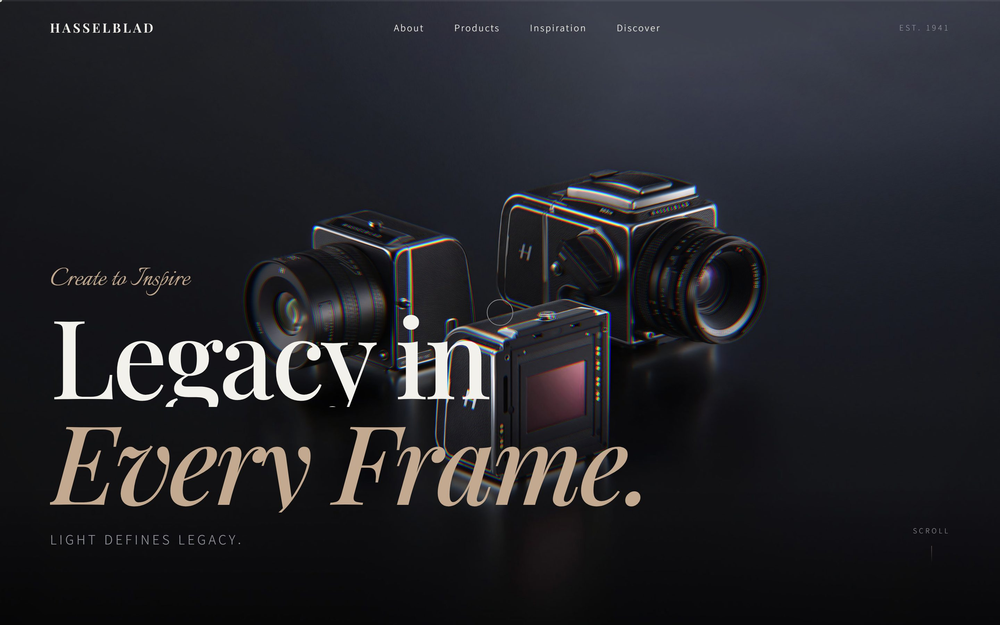
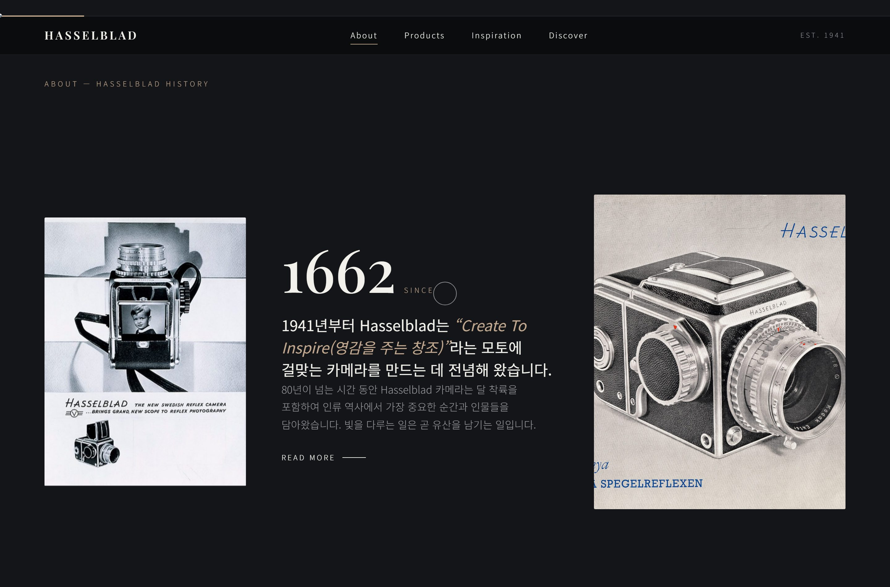
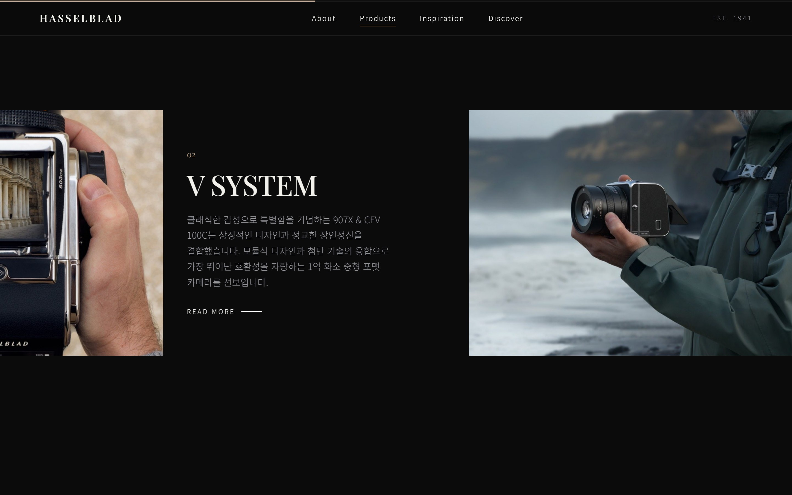
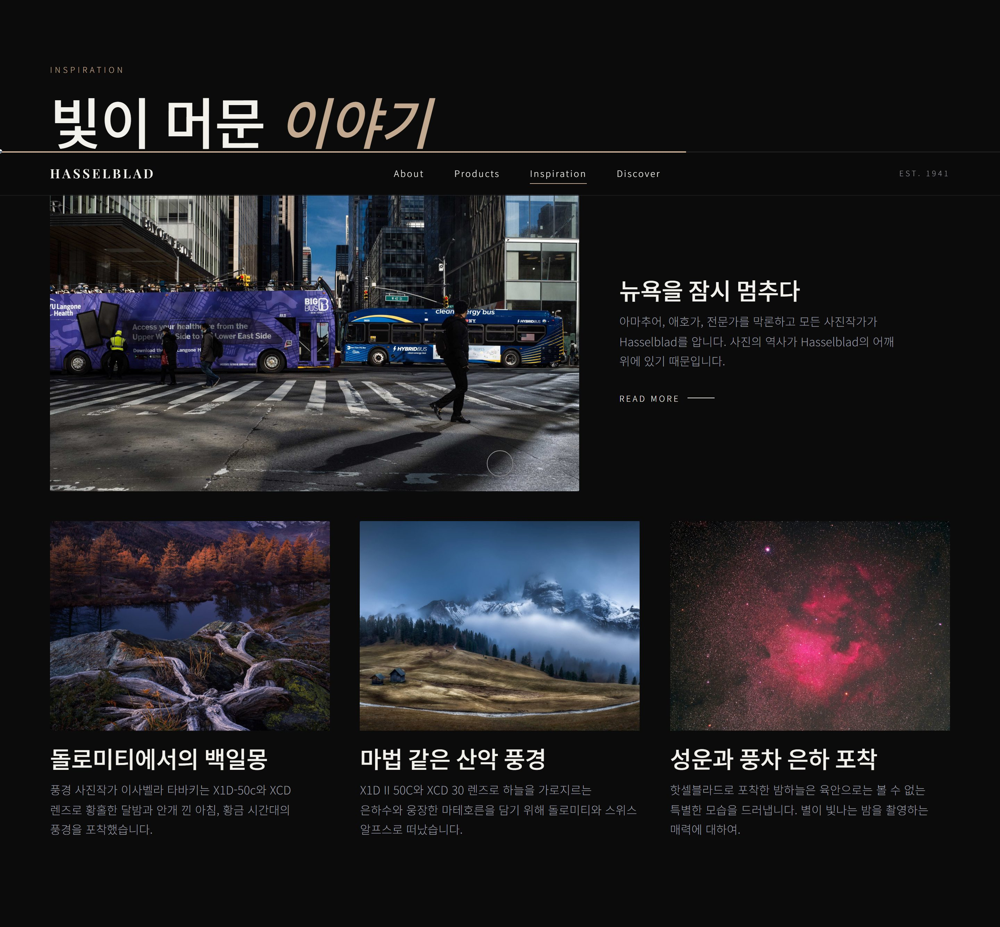
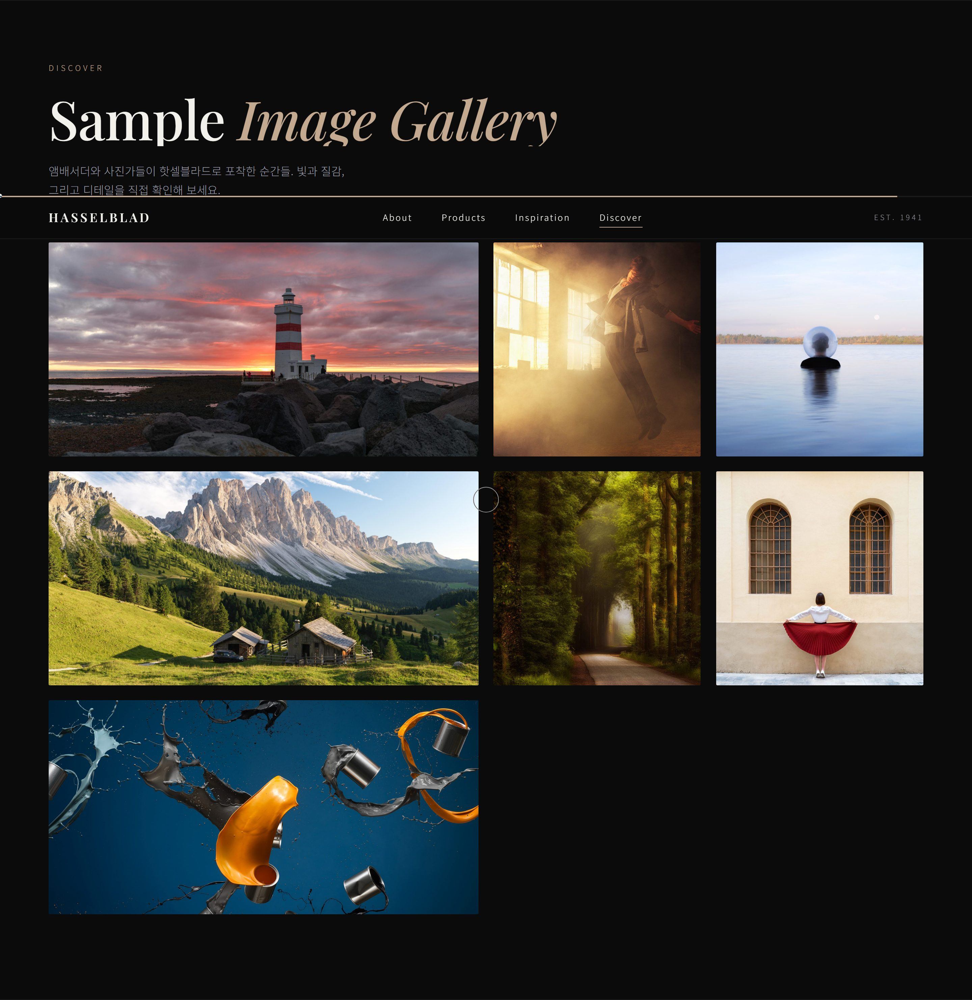
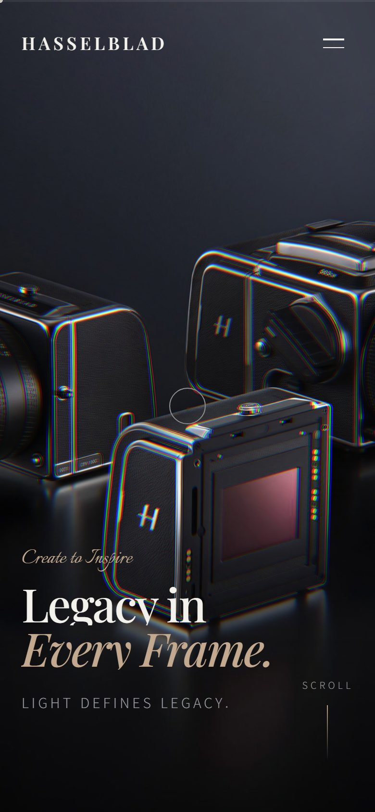
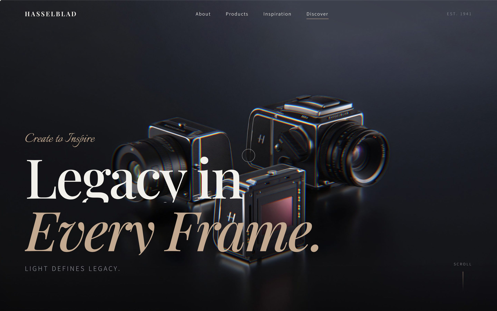

모든 프레임에 유산을LEGACY IN EVERY FRAME
1941년 스웨덴에서 시작된 중형 포맷의 헤리티지. '기업 카탈로그'처럼 흩어져 있던 hasselblad.com을 다크 럭셔리 단일 서사로 재해석한 리디자인의 UX 사고 과정을 12단계로 기록한다.
브랜드와 사용자를 먼저 이해한다
브랜드 목적
1941년 창립한 스웨덴 중형 포맷 카메라 제조사. 모토 Create to Inspire — 도구가 아니라 '창작의 유산'을 파는 브랜드다. 달 착륙 촬영 등 사진사(史)의 결정적 순간을 함께한 헤리티지가 핵심 자산이다.
핵심 가치
80년 헤리티지 · 1억~4억 화소의 극한 화질 · 장인정신 · 프리미엄(고가·소수 정예). 가격이 아니라 '결과물의 격(格)'으로 설득해야 하는 제품군이다.
주요 사용자 (3층위)
- 구매 검토 전문가·하이아마추어 — X·V·H 시스템과 렌즈 스펙, 확장성 비교
- 브랜드 동경층·입문자 — 헤리티지와 작가 사례로 '언젠가의 구매'를 꿈꾸는 잠재고객
- 채용담당자·동료 — 리디자인 완성도와 인터랙션 구현력을 평가
기존 사이트를 진단한다
2026-07-05 실제 hasselblad.com을 직접 접속·렌더링해 실측한 결과. 내비·IA·콘텐츠는 라이브 확인, 접근성·시맨틱은 렌더된 DOM 기준이며 관측 한계는 명시한다.
- 정보구조(IA)
- 글로벌 내비가 X System · V System · Phocus · Support · Where to Buy · Store로 시작 — 제품 시스템이 우선이고, 1941 헤리티지 서사는 'About Hasselblad' 하위로 밀려 분산된다.
- 헤리티지 분산
- 1941·달 착륙 등 강력한 유산이 Inspiration 하위(Iconic Moments·Masters·Heroines·Moments)로 흩어져, '하나의 유산 서사'가 아니라 캠페인 조각들로 존재한다.
- 내비게이션
- 메가메뉴에 Products / Inspiration / Support / Get a Hasselblad / Learn 등 항목이 많아 프리미엄의 '절제'보다 정보량이 앞선다.
- 시각 계층
- 홈은 사진 중심·저텍스트로 브랜드 톤은 잘 선다(강점). 다만 히어로 이후가 X2D II 100C → 렌즈 → 907X → 작가 스토리 → Iconic Moments → 뉴스레터의 프로모 블록 나열이라 판촉 카탈로그 리듬에 가깝다.
- 인터랙션
- 홈에
<video>·<canvas>가 관측되지 않음(정적 이미지 중심). '정밀·장인정신'을 체감시킬 모션 장치는 발견되지 않았다. - 접근성
- 시맨틱 랜드마크 존재, 홈 이미지 대체텍스트 누락 0건(강점). 그러나 h1 남발로 제목 위계가 평평하고 skip-link 부재 → 스크린리더 wayfinding·키보드 건너뛰기가 취약하다.
- 모바일
- 390px에서 가로 오버플로우 없음(강점). 표준 햄버거 패턴은 자동 탐지되지 않아 소형 화면 내비 방식은 추가 확인이 필요(관측 한계).
무엇이, 왜 문제인가
- P1
헤리티지가 '읽어야 아는 정보'로 묻혀, 첫 화면에서 브랜드의 격이 즉시 전달되지 않는다. ← IA가 '제품 카탈로그'를 우선해 브랜드 서사를 종속 페이지로 밀어냄
- P2
제품군이 개별 나열되어 X/V/H가 '하나의 시스템'이라는 구조로 인지되지 않는다. ← 제품을 SKU 단위로 다루고 '시스템'을 IA로 승격하지 않음
- P3
결과물(작례)이 프로모 블록에 흩어져, 구매 동기의 핵심인 '시각적 증거'가 하나의 갤러리로 응집되지 못한다. ← 사진은 풍부하나 캠페인 단위로 분산, '주인공'으로 세우는 응집된 뷰 부재
- P4
정적 인터랙션이 '정밀·장인정신'이라는 브랜드 속성을 체감시키지 못한다. ← 모션을 장식으로만 인식, 브랜드 속성을 인터랙션 언어로 번역하지 않음
- P5
로딩 순간의 브랜드 첫인상이 비어 있어, 진입 직후 격이 형성되지 않는다. ← 로딩을 '기다림'으로만 처리, 브랜드 연출 기회로 활용하지 않음
사용자는 "이 브랜드가 왜 특별하고, 이 카메라로 어떤 이미지를 만들 수 있는지"를 감정적으로 확신하려 하지만, 헤리티지가 묻혀 있고 결과물이 부속 이미지로 처리되어 확신에 이르지 못한다.
디자인 목표
진입 3초 안에 '헤리티지 · 다크 럭셔리'라는 브랜드 격을 체감시킨다. (→ P1·P5)
제품을 'X · V · H System'이라는 하나의 정돈된 세계관으로 재구조화한다. (→ P2)
결과물(작례)을 콘텐츠의 주인공으로 승격해 시각적 설득력을 극대화한다. (→ P3)
'정밀·빛'이라는 브랜드 속성을 인터랙션 언어로 번역하되 60fps·접근성을 지킨다. (→ P4)
'감정→구조→증거' 단일 서사로 재편
- Hero감정
- About헤리티지
- Products시스템
- Inspiration작례
- Ambassadors신뢰
- Discover갤러리
- S1 서사 우선 IA — Hero → About → Products → Inspiration → Ambassadors → Discover의 '감정 → 구조 → 증거' 스토리라인으로 단일 페이지 재편.
- S2 절제된 내비게이션 — About/Products/Inspiration/Discover 4개 앵커 + EST.1941 시그니처. 분산된 메가메뉴를 제거해 프리미엄의 '여백' 확보.
- S3 제품의 시스템화 — 가로 핀(pin) 쇼케이스로 X→V→H→Lens를 '한 축의 흐름'으로 제시, 번호(01–04)로 시스템 계층을 시각화.
- S4 결과물 주인공화 — 흩어진 작례를 Inspiration 스토리 + Discover 매트릭스 갤러리 + 라이트박스 확대로 '하나의 갤러리'에 응집.
- S5 브랜드 속성의 모션 번역 — 시네마틱 프리로더 · 마우스 반응 WebGL 히어로 · 헤딩 클립 리빌 · 키네틱 마퀴 · 커스텀 커서로 '정밀·빛'을 촉각화.
- S6 성능·접근성 병행 — skip-link, aria 라벨, 대체텍스트, prefers-reduced-motion 고려로 화려함과 책임감을 함께.
전략을 화면으로 옮기다
<canvas> WebGL glow, 클립된 2행 타이틀 리빌, SCROLL 인디케이터로 첫 격을 형성. (G1)




'다크 럭셔리' 디자인 시스템
Palette
- ink#0B0B0C
- graphite#141519
- panel#1B1C21
- paper#F2F1EC
- muted#9A9CA3
- accent#C2A98F
Typography
Playfair Display — Legacy in Every Frame제목 · 헤리티지의 격
Noto Sans KR — 모든 프레임에 유산을 담다본문 · 라벨 · 현대적 명료함
Motion
시네마틱 프리로더(로딩=개막) · 마우스 반응 WebGL 히어로 · 헤딩 클립 리빌 · 키네틱 마퀴 · 커스텀 커서 —
모두 prefers-reduced-motion에서 축소한다. ease는 cubic-bezier(0.22, 1, 0.36, 1) 하나로 통일해 리듬을 일관되게 유지.
완성된 화면

결함을 보강하다 컨셉 보존형 2차 개선
기대 효과
- 진입 즉시 '다크 럭셔리 헤리티지'가 체감되어 초기 이탈이 줄고 브랜드 격 인지가 상승한다. (P1·P5)
- 제품이 '시스템'으로 조망되어 전문가의 라인업 이해 시간이 단축된다. (P2)
- 작례가 주인공으로 전시되어 '나도 저런 이미지를' 동경이 커지고 구매 동기가 강화된다. (P3)
- 프리로더·WebGL·클립 리빌이 '정밀·빛'이라는 브랜드 속성을 정서적으로 각인한다. (P4)
- skip-link·aria·alt로 화려함과 접근성을 동시에 만족 → 폭넓은 사용자를 포용한다.
회고
이 프로젝트에서 가장 신경 쓴 것은 '컨셉을 지키면서 결함만 보강'하는 균형이었다. 다크 럭셔리·프리로더·WebGL 히어로·가로 핀 쇼케이스·라이트박스는 브랜드 격을 만드는 핵심 자산이라 손대지 않되, 모바일 내비 소멸이나 죽은 READ MORE 링크처럼 실제 사용자를 막는 결함은 코드 레벨에서 근거(파일:라인)를 짚어 국소적으로 고쳤다.
몰입형 인터랙션과 접근성·성능은 자주 충돌했다. WebGL 히어로·시네마틱 프리로더로 '빛'을 체감시키되,
모든 신규 모션을 prefers-reduced-motion에서 축소하고 라이트박스에는 포커스 트랩을 더하는 식으로
'화려함'과 '책임감' 사이를 조율했다. 결과의 감도만큼이나 왜 그렇게 했는지를 설명할 수 있는가가 중요하다는 걸 배웠다.
남은 과제도 솔직히 남겨둔다. 제품 상세 페이지가 아직 없어 READ MORE는 aria-disabled placeholder로 처리했고, WebGL 히어로의 60fps·모바일 발열은 브라우저 실측으로 계속 확인이 필요하다. 이 케이스 스터디는 그 과정을 감추지 않고 드러내는 기록이다.